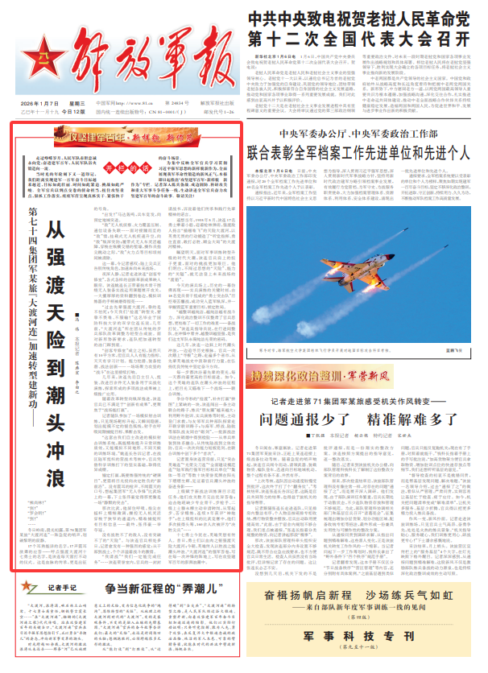

第七十四集团军某旅“大渡河连”加速转型建新功——
从强渡天险到潮头冲浪
■冯伟 解放军报记者 陈典宏 李由之
“熊尚林！”
“到！”
“罗会明！”
“到！”
……
冬日岭南，晨光初露，第74集团军某旅“大渡河连”一阵急促的哨声，划破黎明的寂静。
17个耳熟能详的名字，17声震耳欲聋的应答——呼点强渡大渡河十七勇士的名字，是该连每天雷打不动的仪式。这是血脉的传承，更是出征的号角。
“出发！”马达轰鸣，兵车竞发，向预定地域突进。
“敌”无人机侦察、火力覆盖压制、通信设备失联……面对接踵而至的“敌”情，挂载式无人机疾速升空，向“敌”纵深突防；履带式无人车灵活越障，穿梭在纵横交错的堑壕，操作员指尖跳动之际，“敌”火力点等目标顷刻间被清除。
这一幕，令记者感叹：陆上尖兵正告别传统角色，加速奔向未来战场。
夜深人静，记者走进该连“创客专修室”，各式各样的创新革新成果映入眼帘。该连姚连长正带着技术骨干围绕无人装备实战运用课题展开攻关，一大摞厚厚的资料翻到卷边，模拟训练器的手柄被磨得锃亮……
“过去先辈强渡大渡河，靠的是不怕死；今天我们‘抢渡’转型关，要靠不畏难、不服输！”这名毕业于国防科技大学的双学位连长说，几年前，“大渡河连”所在团从传统的步兵部队改革调整为轻型合成旅。面对新形势新要求，连队把加速转型的油门踩到底。
“创客专修室”成立之初，虽然只有10平方米，但官兵人人有能力指标、天天有学习计划。能力挖潜、装备挖潜、战法创新……一场场聚力攻坚的“战斗”在这里接续打响。
几年来，该连先后自主引入、组装、改进百余件无人装备用于实战化演练，探索形成的多项战法成果被上级推广应用。
随着改革转型向纵深推进，该连官兵已不满足于“创新有成果”，更聚焦于“战场能打赢”。
记者随队参加了一场模拟射击训练，只见现场靶标升起，又瞬间隐匿，划出捉摸不定的银色弧线，射手在呼吸间隙捕捉目标、果断击发。
“这套由我们自主改进的模拟射击训练系统，既能精准提升日常训练质效，又能模拟不同地形、不同天候的训练环境。”姚连长告诉记者，在战区陆军组织的营战术考核中，官兵凭借科学训练打下的坚实基础，取得优异成绩。
锚定打赢，既要练强传统的“硬课目”，更需将目光投向决定胜负的“新前沿”。没有震耳的枪声、不闻震天的口号，想起集团军“无人争锋”比武场上的一幕，下士张伟豪觉得那更像是一场“静默的突击”。
那次比武，他屏住呼吸，指尖在摇杆上精细微调，操控无人机灵活穿梭于狭窄的通道内，精准捕捉所有目标信息……最终，张伟豪一举夺冠。
没有战胜不了的敌人，没有突破不了的“天险”。与该连官兵相处多日，记者愈发有一种强烈的感觉：从干部到战士，个个洋溢着战斗的激情。
“我请战”“我们一定能完成任务”……该连荣誉室内，官兵的一封封请战书，诉说着他们传承和践行先辈精神的诺言。
遥想当年，1935年5月，该连17名勇士乘着小船，迎着枪林弹雨，强渡敌人扬言“插翅难飞”的天险大渡河，以英勇无畏的行动锻造了“听党指挥、勇往直前、敢打必胜、顾全大局”的大渡河精神。
瞩望明天，面对军事训练转型升级的时代大潮，该连官兵肩上的担子更重，面对的挑战更加艰巨。他们明白，不闯过思想的“天险”、能力的“关隘”，就无法登上未来战场的“渡船”。
今天的演兵场上，历史的一幕仿佛再现——实兵演练的关键时刻，由18名党员骨干组成的“勇士突击队”历经艰苦鏖战，成功突入蓝军纵深，并一举摧毁蓝军重要目标，锁定胜局。
“越整训越纯洁，越纯洁越有战斗力。深化政治整训不仅整肃了官兵思想，更校准了一切工作的准星——备战打仗。”该连吴指导员说，在行进间整队、在冲锋中看齐，越整训越坚强，是我们这支军队永葆纯洁光荣的密码。
这几年，该连一边跃上时代潮头冲浪，一边追寻历史根脉。官兵一次次踏上“寻根”之路，走遍多个省市，从先辈英雄战史中汲取前行力量，在弘扬优良传统中坚定奋斗方向。
每一步都沐浴着先辈的荣光，每一天都向着更高的目标前进。如今，这个英雄的连队在潮头冲浪的征程上，把目光又瞄准下一个战场——联合训练。
争分夺秒的“抢渡”，补齐打赢“拼图”上紧缺的一块，该连闯出一条主动联合的路子，练兵“朋友圈”越来越大：利用野外驻训、实兵演练等时机，主动登门求教，与友邻军兵种部队探索走开联学联训路子；与海军、特战、陆航等部队战友同台“砺剑”，一批新战法训法在硝烟中得到检验……从单兵单装到体系融合，从传统陆战到立体攻防，官兵一次次向能力短板亮剑，在联合训练中创下多个“首次”。
记者置身该连营房前，只见“突击英雄连”“光荣尖刀连”“全面建设模范连”“陆军践行强军目标标兵单位”“集体一等功”等数十块荣誉奖牌在阳光下熠熠生辉，见证着官兵潮头冲浪的奋进身影——
上级赋予新战法训练课目示范任务，他们攻关数月交出优异答卷；迫击炮班缺少专业骨干，步枪手、二级上士滕永柳主动申请转岗，从零起步、苦学精练，连续3年获评“神炮手”；在上级组织的比武竞赛中，他们多次拔得头筹，160余人次被评为“决胜尖兵”……
十七勇士今犹在，英雄笑慰有传人。昔日，勇士们以血肉之躯强渡天险大渡河；今朝，英雄传人以胜战之能潮头冲浪。“大渡河连”的强军答卷，写在每一次冲锋的阵地上，写在攻坚建军百年的澎湃浪潮中。
